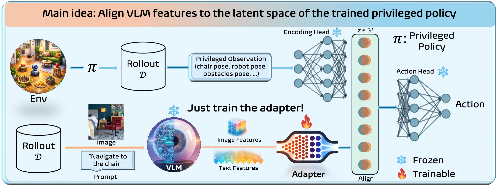
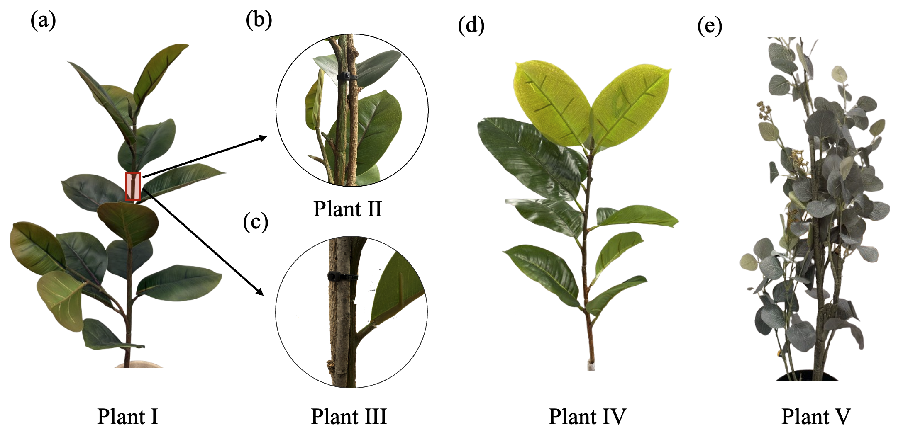
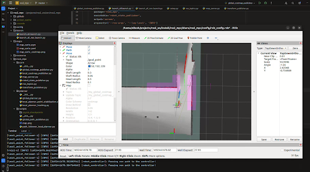
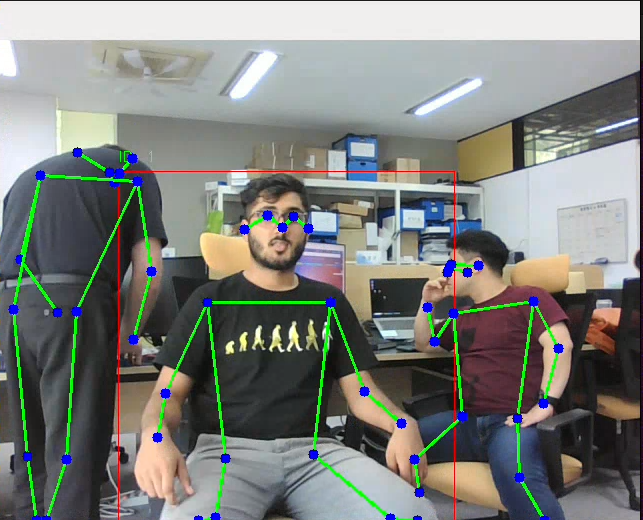
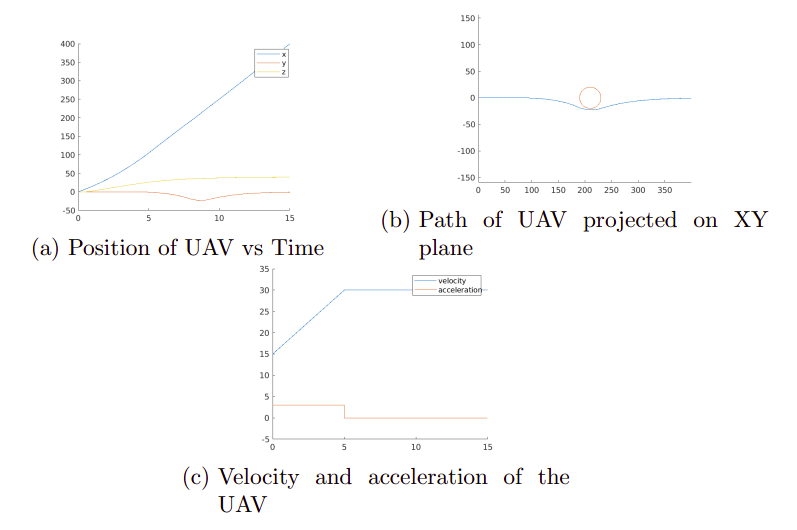
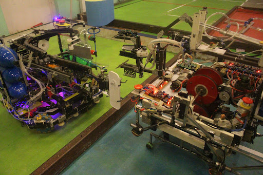

LCLA has been accepted to CoRL 2026. Learn more
Nitesh Subedi · Ph.D. Researcher, Iowa State University
Robots that perceive, reason, and act.
Advancing autonomous navigation, robot learning, and vision-language systems, from simulation to real hardware.
New · Accepted at CoRL 2026
LCLA
Language-Conditioned Latent Alignment for vision-language navigation.

Align, don’t retrain.VLM image and text features are mapped into the latent space of a trained privileged policy.
Just train the adapter.A lightweight adapter decouples perception from control while the expert policy stays frozen.
Reuse expert behavior.The same expert transfers across sensing modalities and environments, guided by natural language.
ICRA 2026
Find the Fruit.
Zero-shot sim2real reinforcement learning for occlusion-aware plant manipulation.

Occlusion-awaremanipulation that exposes target fruits hidden behind foliage.
Zero-shottransfer: the policy trains entirely in simulation.
Decoupledkinematic planning and compliant low-level control.
Engineering breadth
Research grounded in complete robotic systems.
From dynamics and control through perception and learning, with deployment as the final test.
Control
Full MPC navigation stack.
ROS 2 navigation using CasADi, IPOPT, and NUMBA acceleration for real-time optimal path generation and tracking.

Perception
Computer vision.
Detection, tracking, and person re-identification with YOLO, DeepSort, and OpenCV.

Aerial
MPC for UAVs.
Trajectory generation from full quadrotor kinematic and dynamic models.

Hardware
Four ABU Robocon campaigns.
Robot design, fabrication, and controls. Competed in China, Mongolia, and Vietnam, and won the ROHM Special Award in 2019.

Meet the researcher
From mechanical systems to embodied intelligence.
I am a Ph.D. researcher in Mechanical Engineering at Iowa State University and a Graduate Research Assistant. My work spans reinforcement learning for robotic manipulation, robot navigation using LLMs and VLMs, and model predictive control.
Before my Ph.D., I worked as an R&D Engineer at NSDeVil on autonomous navigation for wheeled robots.
Let’s build robots for difficult environments.
Open to research collaborations across robotics, autonomous navigation, manipulation, and embodied AI.